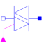
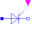

IdealTriacIdeal triac, based on ideal thyristors |

|
Diagram
{kind=link}
Information
This information is part of the Modelica Standard Library maintained by the Modelica Association.
This is an ideal triac model based on an ideal thyristor model.
Two ideal thyristors (Modelica.Electrical.Analog.Ideal.IdealThyristor) are contrarily connected in parallel and additionally eliminated interference with a resistor (Rdis=100) and a capacitor (Cdis=0.005), which are connected in series.
The electrical component triac (TRIode Alternating Current switch) is, due to whose complex structure, a multifunctional applicable construction unit. The application area of this element is the manipulation of alternating current signals in frequency, voltage and/or current and also general blocking or filtering. However, compared to a thyristor the triac is only applied for substantial lesser currents, what is justified by whose sensitive structure. Generally one is limited to maximal voltages from 800 volt and currents from 40 ampere. For comparison maximal voltages of a thyristor are 8.000 volt and currents 5.000 ampere.
Structure and functionality:
Functionality of a triac is in principle the same like functionality of a thyristor, even connecting through of current starting from a certain voltage (knee voltage), but only if the current at anode and cathode is caused by a impulse current in the gate electrode. In case of the triac this process is also possible with reverse polarity, wherefore it is possible to control both half-waves of alternating currents. By means of gate electrodes, which are connected in a triac and why only one gate electrode is necessary, the point of time can be determined, at which the triac lets the alternating current signal pass. Thereby it is possible to affect the phase, at which the alternating current signal is cut. One speaks also of phase-angle control. Also depending on doping and specific structure knee voltage and maximal current carrying are alterable.
Characteristics:
- high switching times between on-state and off state up to activation of the reverse current phase
- gate electrode are activated with (positive) impulse (called thyristor/triac firing), after firing thyristor path holds itself in state of low resistance or conductive state up to holding voltage is fallen below, it follows change to off state and next thyristor path can fire
- in particular by switching of inductive components triacs generate harmonic waves, whose frequency ranges into broadcast sector and could there cause transmission disturbances; therefore triacs have to eliminate interference by inductors and capacitors
Applications:
- any stepless exposure (dimmer)
- engine speed adjustment of electric motors
- further applications of phase-angle control (power electronics)
- power packs
As an additional information: this model is based on the Modelica.Electrical.Analog.Ideal.IdealThyristor.
Parameters (5)
| Ron |
Value: 1e-5 Type: Resistance (Ω) Description: Closed triac resistance |
|---|---|
| Goff |
Value: 1e-5 Type: Conductance (S) Description: Opened triac conductance |
| Vknee |
Value: 0.8 Type: Voltage (V) Description: Threshold voltage for positive and negative phase |
| Rdis |
Value: 100 Type: Resistance (Ω) Description: Resistance of disturbance elimination |
| Cdis |
Value: 0.005 Type: Capacitance (F) Description: Capacity of disturbance elimination |
Connectors (3)
| fire1 |
Type: BooleanInput Description: Gate |
|
|---|---|---|
| n |
Type: NegativePin Description: Cathode |
|
| p |
Type: PositivePin Description: Anode |
Components (4)
|  | idealThyristor |
Type: IdealThyristor |
|---|---|---|
| idealThyristor1 |
Type: IdealThyristor |
|
| resistor |
Type: Resistor |
|
| capacitor |
Type: Capacitor |
Used in Examples (1)
|
Modelica.Electrical.Analog.Examples Ideal triac test circuit |